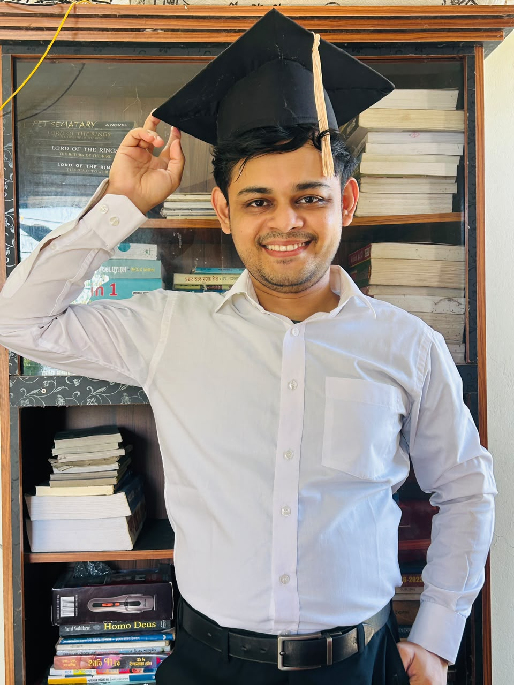
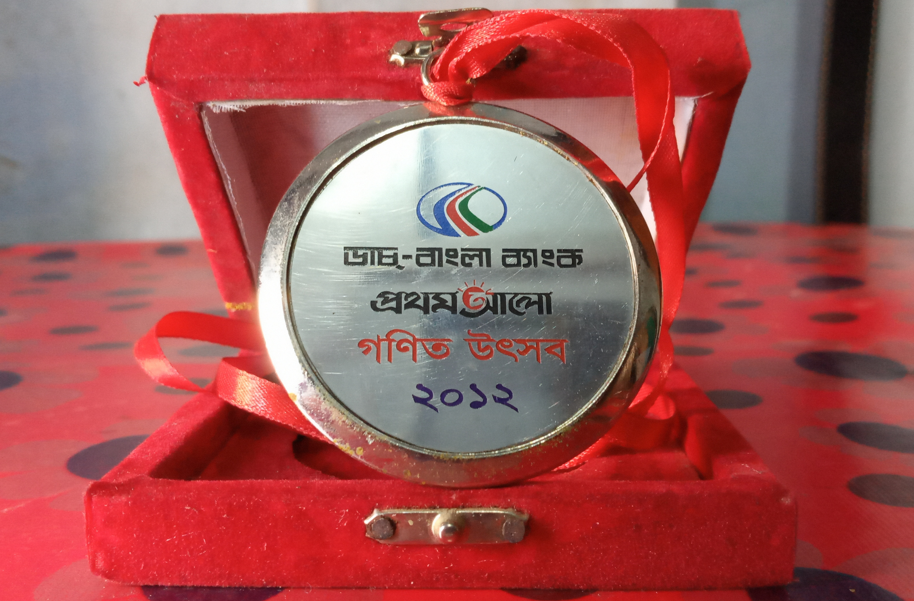
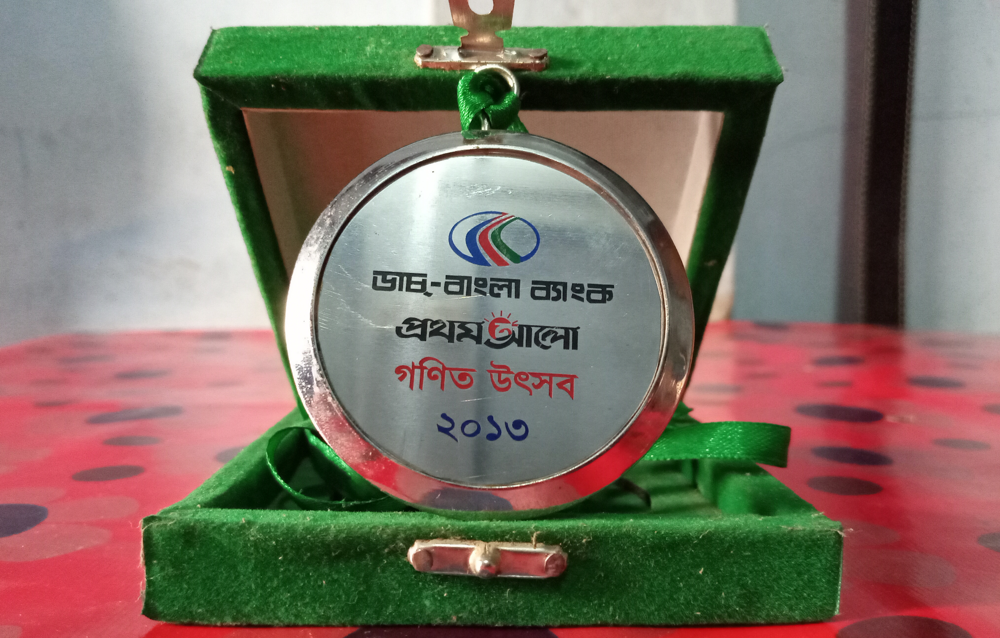
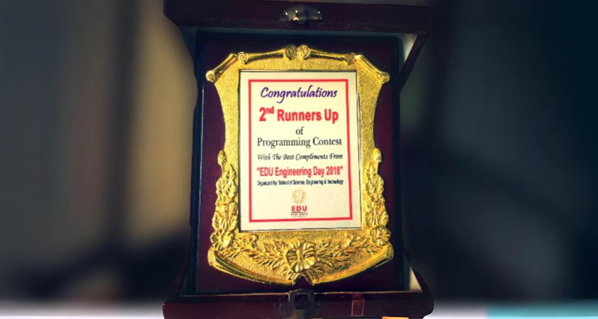
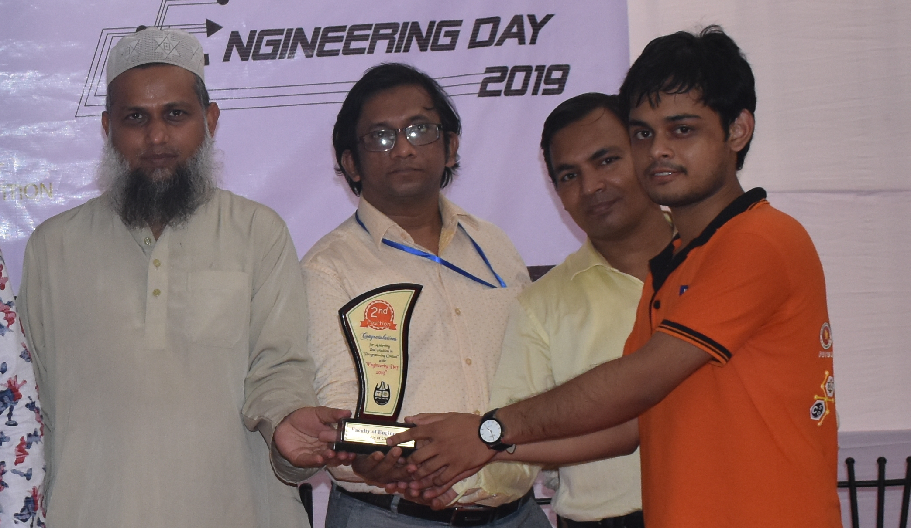
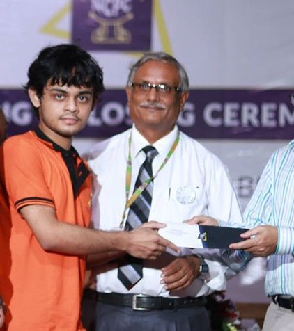

Upazila Non-Formal Education Officer · Recommended, 44th BCS
Educator-in-waiting, lifelong problem-solver, and a fairly serious tea enthusiast.
“By all means marry; if you get a good partner, you'll be happy; if you get a bad one, you'll become a philosopher.” — Socrates
Won my first Math Olympiad — celebrated with tea and too much cake.
Graduated with a B.Sc. — learned coding is easier than adulting.
Recommended as Upazila Non-Formal Education Officer, 44th BCS. Haven't joined yet — but the tea is already brewing.
Times when my parents' investment in my education actually paid off.

Champion, Secondary Category, Sylhet Division, Bangladesh Mathematical Olympiad, 2012
View certificate →
1st Runner-Up, Higher Secondary Category, Sylhet Division, Bangladesh Mathematical Olympiad, 2013
View certificate →
2nd Runner-Up, EDU Engineering Day Programming Contest, 2018

Runner-Up, CU Engineering Day Programming Contest, 2019

Champion, Chittagong Division, National Collegiate Programming Contest (NCPC), 2018
When I'm not solving complex algorithms or debugging my life choices, you can find me: